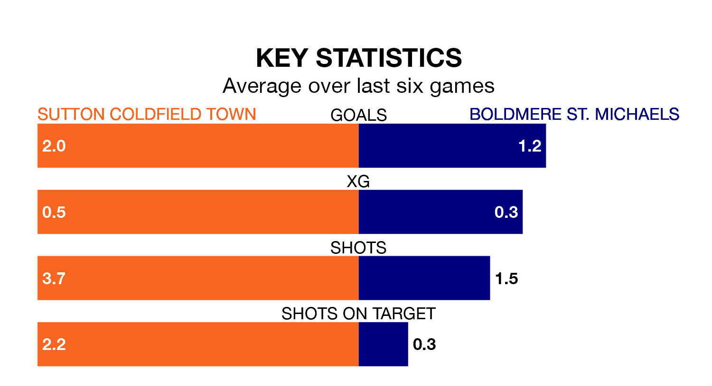

Sutton Coldfield Town host Boldmere St. Michaels at the Central Ground on Monday on the back of three consecutive wins in the Northern Premier League Division One Midlands.
Sutton Coldfield have picked up 12 points from their last six games, and they face a Boldmere St. Michaels side who also won their last match, and have collected four points from the last possible 18.
With 52 goals in 32 games so far this season, Sutton Coldfield are scoring at the league's average rate with 1.6 goals per game. And they are conceding fewer than average, letting in 48 goals at a rate of 1.5 per game.
Boldmere St. Michaels are also average scorers, with 1.6 goals per game. They have conceded 1.5 goals per game.
In the last five years, Sutton Coldfield and Boldmere St. Michaels have played each other on four occasions. Sutton Coldfield won one of them and Boldmere St. Michaels the other.
On average, Sutton Coldfield scored 0.5 goals and Boldmere St. Michaels 1.8 in those matches.
Their last meeting was on December 26, when Sutton Coldfield won 1-0 away.
Town are eighth in the table after 32 games, of which they have won 14 and drawn six, earning 48 points.
The visitors are five places behind the home team in 13th, with 11 wins and four draws putting them on 37 points.
Sutton Coldfield's last match was on Saturday, a 1-0 win against Coventry Sphinx.
Boldmere St. Michaels beat Gresley 5-1 last time out, also on Saturday.
Updated: 10:31 (UTC), 31/03/24